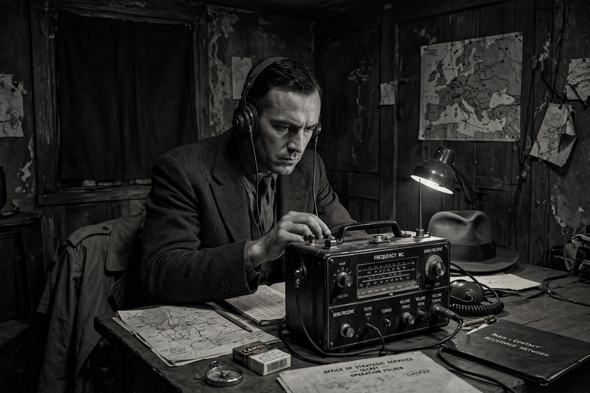

| Office of Strategic Services | |
|---|---|
| Formed | June 13, 1942 |
| Dissolved | September 20, 1945 |
| Director | Major General William J. Donovan |
| Headquarters | Washington, D.C. |
| Successor | Central Intelligence Agency (1947) |
The Office of Strategic Services (OSS) was the intelligence agency of the United States during the Second World War, formed on June 13, 1942, under the direction of William J. "Wild Bill" Donovan. It conducted espionage, sabotage, propaganda, and guerrilla warfare behind enemy lines, and is regarded as the forerunner of the Central Intelligence Agency.
The OSS operated in Europe, North Africa, and Asia. Its branches included Secret Intelligence (SI), Special Operations (SO), Research and Analysis (R&A) — staffed by academics who produced influential studies of enemy societies — and Morale Operations, which ran "black propaganda." OSS detachments worked with resistance movements in France and Yugoslavia, and Detachment 101 in Burma pioneered American guerrilla warfare with the Kachin people. Allen Dulles ran a celebrated station in Bern, Switzerland, receiving intelligence including early reports of the V-2 rocket program.
President Truman dissolved the OSS in September 1945. Its functions passed through interim organizations before the National Security Act of 1947 created the CIA, which absorbed many OSS veterans. The United States Army Special Forces likewise trace part of their lineage to OSS Operational Groups and the Jedburgh teams.
See also: William J. Donovan, Central Intelligence Agency, Jedburgh.